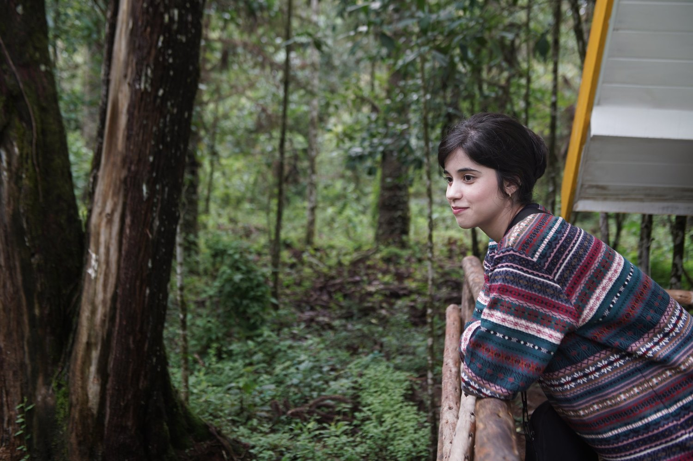
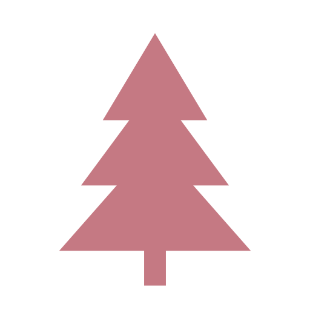

Ilustração — Conurus · Jean Théodore Descourtilz
Amanda
Costa
Product Designer situada em São Paulo. Tenho experiência com múltiplos formatos de produtos digitais, ajudando a entregar a melhor experiência para as pessoas. Amo a natureza, árvores, pássaros e filmes de terror.
Conheça os meus projetosUm pouco sobre mim


Iniciei minha trajetória na faculdade de Análise e Desenvolvimento de Sistemas e, ao longo desse caminho, descobri que meu maior fascínio dentro da tecnologia era entender as pessoas que interagem com ela. Esse mergulho me fez encontrar minha verdadeira vocação e me levou à uma especialização em Experiência do Usuário.
Meu objetivo é facilitar o dia a dia de quem usa: permitir que realizem suas tarefas sem esbarrar em complexidade desnecessária. Para mim, um bom design equilibra os dois lados, uma interface satisfatória para o usuário e resultado estratégico para a empresa.
- Atuação
- Product Design — UX & UI
- Marcas
- Grupo Madero, Spoleto, Domino’s, KFC, Unilever, Volvo, Equifax | BoaVista
- Segmentos
- Financeiro, marketplace, social, locação, agendamento, delivery e SaaS
- Idiomas
- Português e inglês
- Base
- São Paulo, Brasil
Projetos em destaque

Habilidades e Foco
UX Design — Pesquisa e Jornada
Trabalho para garantir que a experiência do usuário seja fluida e sem atritos. Foco no mapeamento detalhado da jornada, na escuta ativa e na análise de métricas via Analytics. Transformo esses dados em ações práticas para evoluir o produto continuamente.
UI Design — Design Systems e Componentes
Desenho interfaces limpas e organizadas, com foco na escalabilidade. Construo e gerencio Design Systems utilizando princípios de Atomic Design, configurando componentes e bibliotecas no Figma para padronizar produtos e acelerar entregas.
Otimização com Inteligência Artificial
Como diferencial, utilizo IAs como Gemini e Claude para turbinar meu fluxo de trabalho. Elas são minhas aliadas para processar dados de pesquisa, estruturar informações complexas e trazer muito mais agilidade e inovação para o processo de design.
Percurso acadêmico
Da base técnica em desenvolvimento à especialização em experiência do usuário.
-
2021
Análise e Desenvolvimento de Sistemas
UNIP
Tecnologia e desenvolvimento de aplicações
-
2022
UX Design
How Bootcamps
Imersão em criação de interfaces e usabilidade
-
2023
User Experience Design
Tera
Foco em pesquisa, métricas e visão de produto
-
2025
Pós-graduação em User Experience Design
Universidade Belas Artes de São Paulo
Especialização em Experiência do Usuário